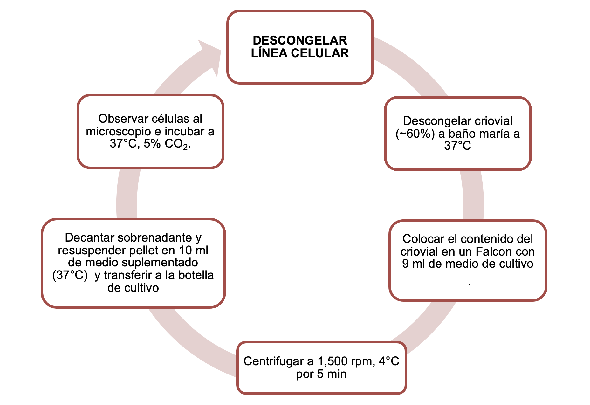

![]()
Descongelar una línea celular manteniendo la viabilidad y condiciones de esterilidad para mantenerla in vitro en condiciones apropiadas para su crecimiento, propagación o almacenamiento para los fines que se requiera.
Este procedimiento involucra a todo el personal técnico, científico y estudiantes que realicen cultivo celular y que deseen descongelar y cultivar una línea celular en la Unidad de Investigación Epidemiológica en Endocrinología y Nutrición del Instituto Nacional de Salud Hospital Infantil de México Federico Gómez
Es responsabilidad de todo el personal científico, estudiantes y técnicos adscritos a la Unidad de Investigación Epidemiológica en Endocrinología y Nutrición del Hospital Infantil de México Federico Gómez conocer y dar seguimiento a este procedimiento. Los residuos de tipo CRETI (Corrosivas, Reactivas, Explosivas, Toxicas e Inflamables) se deberán eliminar con base en su clasificación y especificaciones de manejo según la Norma Oficial Mexicana NOM-087-ECOL-SSA1-2002; así como sus características intrínsecas y su toxicidad al ambiente según la NOM-052- SEMARNAT-2005
Descripción del Protocolo
- Retirar el criovial del tanque de nitrógeno líquido Rápidamente colocar el criovial en baño maría a 37°C sin sumergir la tapa, mover ligeramente el vial hasta que se descongele parcialmente ~60% Rociar y limpiar el criovial con etanol al 70% y transferir por inversión el contenido del vial a un tubo Falcon de 15 ml en el cual previamente se deben haber colocado 9 ml de medio de cultivo óptimo para la línea celular (suplementado). Centrifugar a 1,500 rpm a 4°C por 5 min Decantar el sobrenadante y resuspender gentilmente el pellet con 10 ml de medio de cultivo precalentado a 37°C en baño maría Transferir la suspensión celular a una botella de cultivo seleccionada según los requerimientos de la línea celular. La botella debe ser correctamente rotulada con el nombre de la línea, número de pase celular, fecha y nombre de quien realiza el procedimiento Observar las células al microscopio Incubar a 37°C con 5% de CO2 y ~85-95% de humedad Continuar el cultivo celular según los requerimientos de cada línea y de la estrategia experimental
- el protocolo será llevado a cabo con técnica aséptica en campana de flujo laminar
Diagrama de Flujo

Anexos
geles
| Tamaño (kb) | Concentración |
|---|---|
| >2 | 0.6% |
| 1-2 | 0.8% |
| 0.5-1 | 1% |
| 0.2-0.5 | 1.5% |
| <0.2 | 2% |
Reactivos y Soluciones
- Reactivos
- UltraPure Agarose de Invitrogen
- SYBR SAFE
- Buffer carga 6X DNA Loading Dye
- Marcador de peso molecular
- TAE 1X
- TAE
| 1X | 50X | |
|---|---|---|
| Tris | 40 mM | 242 g |
| Ácido Acético | 20 mM | 57.1 mL |
| Na2EDTA-2H2O | 1 mM | 18.61 g |
| dH2O1 | 1 L | 1 L |
Documentos de referencia
Animal Cell Culture Guide. (s. f.). ATCC. https://www.atcc.org/resources/culture-guides/animal-cell-culture-guide Thawing of frozen cell lines (2020) Sigma Aldrich; ECACC Laboratory Handbook 4° ed. https://www.sigmaaldrich.com/MX/es/technical-documents/protocol/cell-culture-and-cell-culture-analysis/mammalian-cell-culture/thawing-of-frozen-cell-lines?srsltid=AfmBOorDbumsK7KL4YfndwpfPTM_xqbraqD5JZw2OI7F7cuWF3Rgpo7B Current Protocols in Molecular Biology, Appendix 3, F.12, Supplement 74, Frederick M. Ausubel et al. 2003.
Notas
aforar a↩︎